In one minute
The essentials, for someone who won't read the full report.
Predict the maximum injury severity of a traffic crash — no injury, minor, severe, or fatal — from crash-level records. Fatal crashes make up only ~2.4% of cases.
101,904 police-reported U.S. crashes from the Crash Report Sampling System (CRSS, 2016–2023), flattened from 28 relational tables into 163 features.
A class-weighted Linear SVM and an ordinal XGBoost pipeline that decomposes the 4-class problem into three cumulative binary classifiers.
SHAP for global feature attribution, LIME for local instance-level explanations, and DiCE for counterfactuals — plus an explanation-driven feature-reduction test.
Both models reach ≈0.59 accuracy / 0.53–0.54 macro-F1. Oversampling lifts fatal-class F1 from 0.26 to 0.59 — but feature reduction doesn't generalize.
Why recall matters more than precision here. Correctly identifying fatal injuries is of paramount importance: predicting a non-fatal case as fatal has far less severe consequences than missing a truly fatal one. That asymmetry shaped both the evaluation (macro-F1, per-class F1) and the oversampling strategy.
Dataset & task
Official U.S. police-reported crash records, released as the Crash Report Sampling
System (CRSS). The raw data are 28 relational tables — ACCIDENT,
VEHICLE, PERSON, and more — linked by a unique crash identifier.
From tables to vectors. Each crash becomes one feature vector: entity-level
attributes (vehicles, drivers, occupants) are aggregated to the crash level as counts,
proportions, and summary statistics, with indexed slots for repeated roles
(TRAV_SP_1, TRAV_SP_2, …). The target is
MAX_SEV — the maximum injury severity in the crash — remapped to an
ordered four-class label: 0 no injury, 1 minor, 2 severe,
3 fatal (with “possible injury” merged into minor).
Missingness is encoded, not hidden. Structured unknowns become explicit
_UNKNOWN (attribute missing) and _NOT_APPLICABLE
(conceptually irrelevant) indicator features — and they turn out to carry predictive
signal of their own (see Explainability). Two data representations are kept apart: a
leakage-safe predictive feature set, and an imputed, explanation-only view used for
LIME and DiCE.
Class imbalance and SMOTE. A SMOTE-oversampled variant is created on the training split only, raising fatal prevalence from 2.38% to 5.38% — about half the prevalence of the severe class, rather than full balancing. Both variants are trained and compared side by side.
Class distribution — held-out test split
Why SVM and XGBoost
The final report picks up the story after the finalists were chosen. This is how they were chosen — five model families screened head to head.
What the screening showed. Strong, interpretable baselines held their own against heavier models: kernel-approximated SVMs and tuned Random Forests bought little over a plain linear SVM, while a cumulative (ordinal) XGBoost variant led the field. SMOTE helped every minority class everywhere it was applied. The team carried the two most complementary survivors — a linear model and an ordinal gradient-boosted ensemble — into the full-dataset study.
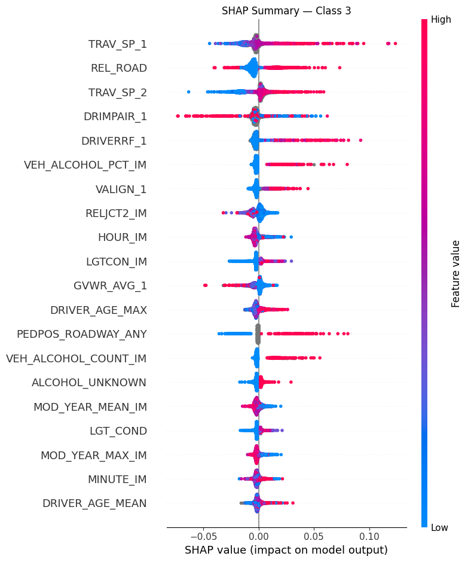
Methodology
Fixed train/validation/test splits; both oversampling settings; explainability aggregated over a fixed evaluation subset; final models re-trained with reduced features and re-evaluated on the held-out test set.
Linear SVM
- Class-weighted (
class_weight=balanced) to counter the 2.4% fatal class. - C tuned on validation over a logarithmic grid; numeric features scaled, categoricals encoded.
- Best macro-F1 among the linear baselines in the screening stage.
- Gets class-conditional explanations — separate SHAP/LIME views per severity class.
Ordinal XGBoost
- Cumulative decomposition into three binary subproblems: P(y≥1), P(y≥2), P(y≥3).
- Separate classifier per threshold, early stopping on validation,
scale_pos_weightper binary distribution. - Class probabilities by subtraction — P(y=0)=1−p₁, P(y=1)=p₁−p₂, P(y=2)=p₂−p₃, P(y=3)=p₃ — argmax decision.
- Respects the ordering of severity classes that plain multiclass ignores.
Explainability
Three complementary lenses: SHAP explains the model globally, LIME explains single predictions locally, and DiCE asks what would have to change for a prediction to move away from fatal.
Global feature attribution on the predictive feature space (mean absolute SHAP).
For XGBoost, importances are computed per ordinal threshold; the most influential
features include NMACTION_NA, VEH_COUNT,
GVWR_AVG_1, ALCOHOL, DRDISTRACT_1, and the
travel-speed slots TRAV_SP_*. The SVM is explained class-conditionally
— the fatal class is pushed upward by TOTAL_COUNT and
NMOTHPRE_UNKNOWN, and downward by REGION and the
45–60 age-share.
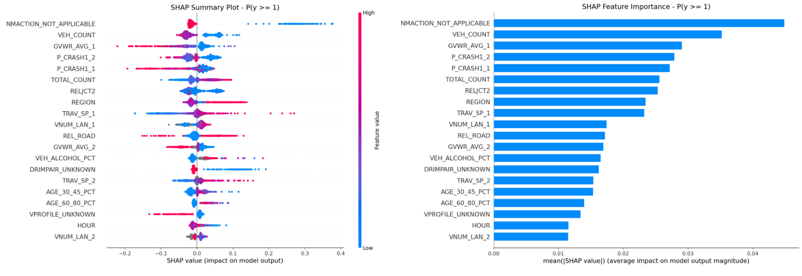
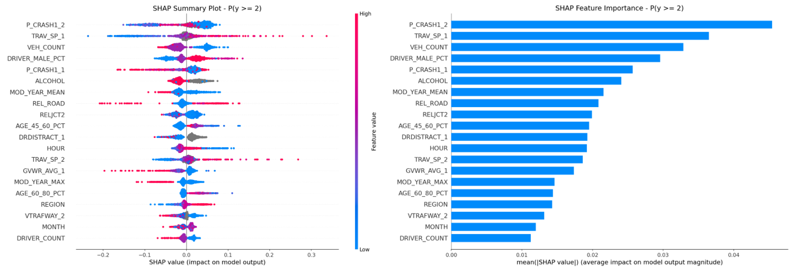
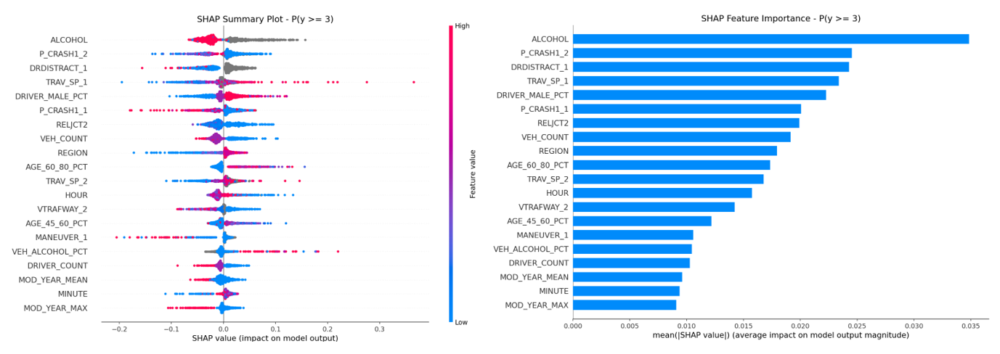
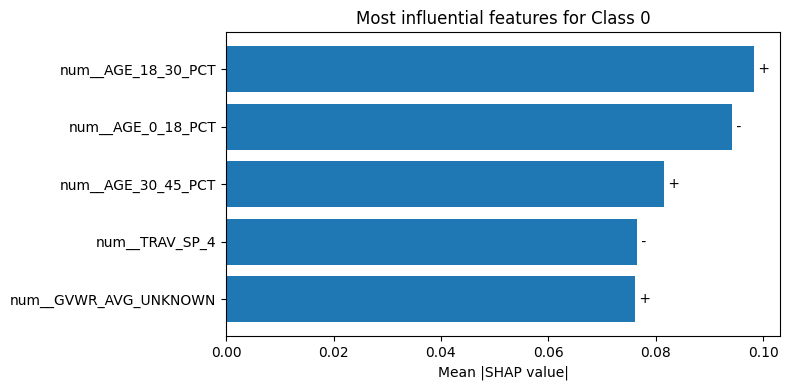
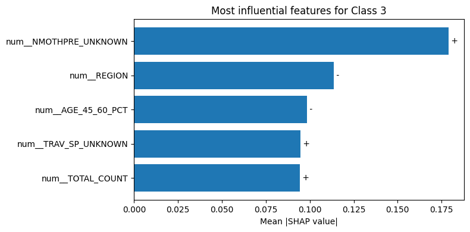
Missingness itself is a signal. An ablation from the progress stage removed
every *_UNKNOWN indicator from the XGBoost model. Use the toggle:
with the indicators present, the fatal-threshold model leans heavily on reporting
artifacts (NMHELMET_UNKNOWN, NMACTION_UNKNOWN); without
them, substantive factors like ALCOHOL dominate — at a small cost in
macro-F1 (0.45 → 0.44 on the subset).
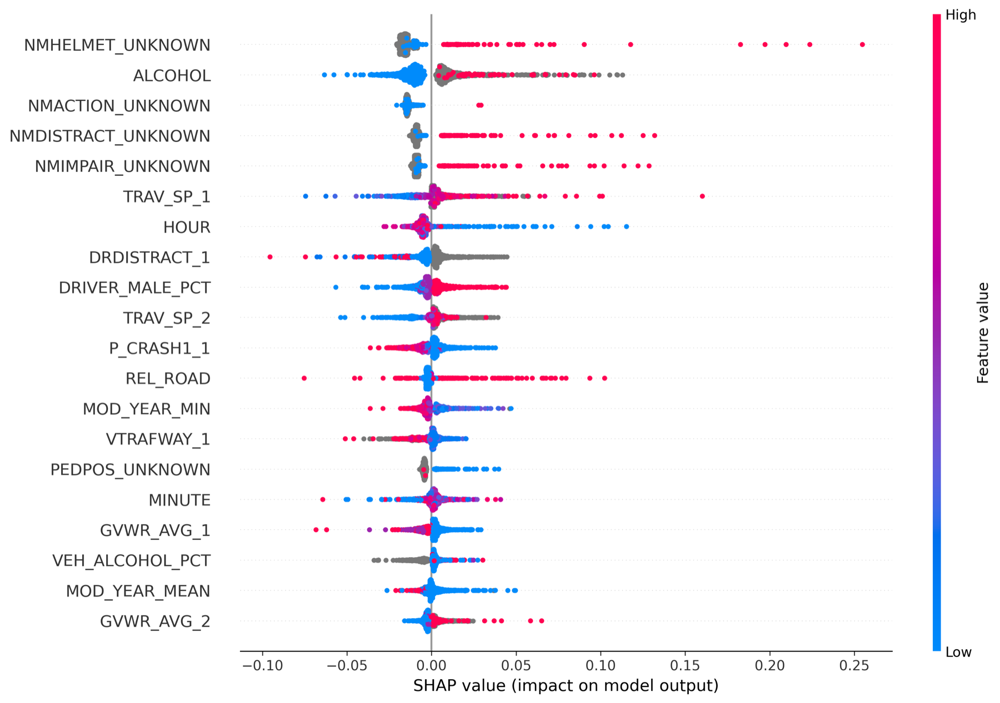
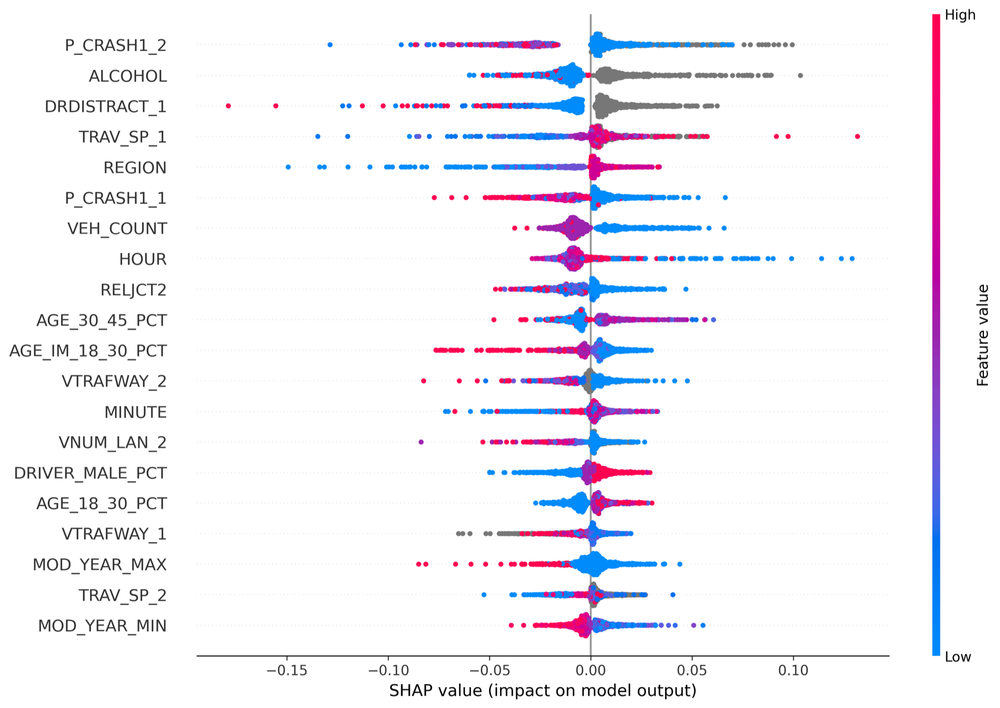
XGBoost SHAP for the fatal threshold P(y≥3), before / after removing *_UNKNOWN features — progress report, Model 8 vs. Model 8′ (20k subset).
Local, instance-level explanations on the imputed explanation-only representation.
XGBoost LIME weights were aggregated over a fixed set of 89 evaluation instances —
VTRAFWAY_4, PEDESTRIAN_COUNT, and
P_CRASH1_4 recur most strongly — while the SVM was explained
class-conditionally for qualitative case studies.
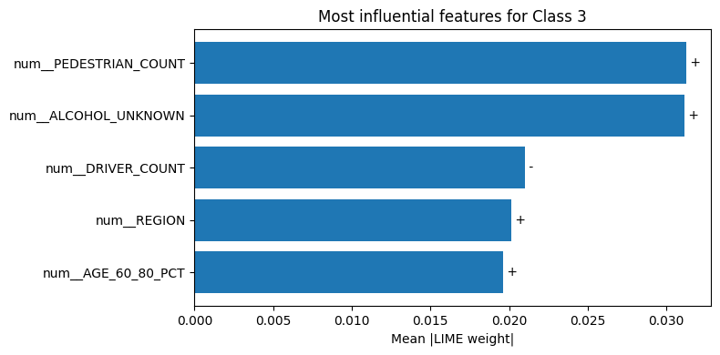
DiCE generates counterfactuals targeting the fatal class: for 20 truly fatal test
crashes, three counterfactuals each, asking what minimal changes move the
prediction away from fatal? For XGBoost, P_CRASH1_2,
MANEUVER_1, and DRIVER_DRUGS_PCT are changed most often;
for the SVM, PEDESTRIAN_COUNT, DRIVERRF_4, and
VEHICLECC_4 dominate. The report is explicit about the caveat: these
are decision-boundary sensitivities, not causal mechanisms.
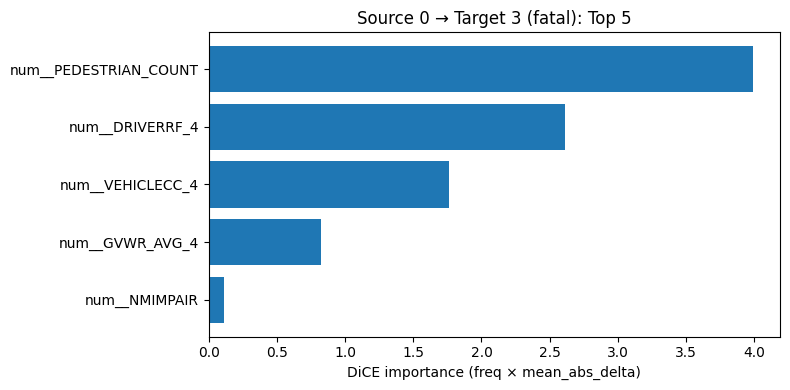
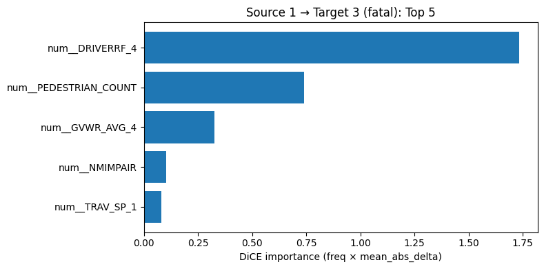
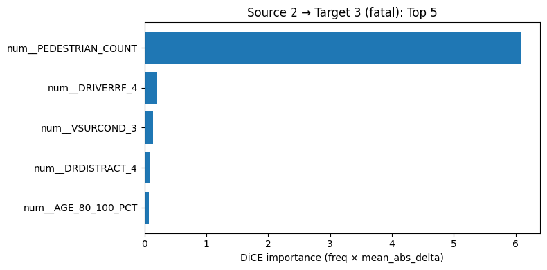
Results & findings
All numbers below are the final, full-dataset results exactly as reported — validation unless marked test.
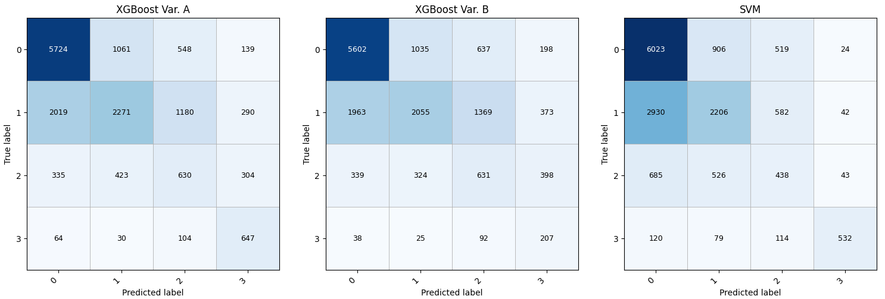
Oversampling, class by class — XGBoost per-class F1
| Model | Macro-F1 | Weighted-F1 |
|---|---|---|
| XGBoost Var A (oversampled) | 0.5235 | 0.5849 |
| XGBoost Var B (non-oversampled) | 0.4321 | 0.5616 |
| Linear SVM | 0.5356 | 0.5678 |
Final report, Table 2
| Metric | Full (163 feat.) | Reduced (154 feat.) |
|---|---|---|
| F1 — C0 no injury | 0.726334 | 0.725452 |
| F1 — C1 minor | 0.422237 | 0.422542 |
| F1 — C2 severe | 0.274283 | 0.274321 |
| F1 — C3 fatal | 0.514220 | 0.507269 |
| Macro F1 | 0.484269 | 0.482396 |
| Weighted F1 | 0.555334 | 0.554659 |
Final report, Table 9 — reduction removes features consistently negligible across SHAP/LIME/DiCE
| Metric | XGBoost Full | XGBoost Reduced | SVM Full |
|---|---|---|---|
| F1 — C0 no injury | 0.726334 | 0.725452 | 0.700000 |
| F1 — C1 minor | 0.422237 | 0.422542 | 0.450000 |
| F1 — C2 severe | 0.274283 | 0.274321 | 0.220000 |
| F1 — C3 fatal | 0.514220 | 0.507269 | 0.400000 |
| Macro F1 | 0.484269 | 0.482396 | 0.445644 |
| Weighted F1 | 0.555334 | 0.554659 | 0.540000 |
| # Features | 163 | 154 | 163 |
Final report, Table 11 — evaluated on the test set
Findings & limitations
- Oversampling's benefit is concentrated on the fatal class — fatal F1 rises 0.264 → 0.595 while the majority classes are essentially unchanged.
- Both models struggle most with adjacent mid classes — minor vs severe confusion is the main residual error, as the confusion matrices show.
- Explanation-driven feature elimination does not improve generalization (XGBoost test macro-F1 0.4843 → 0.4824; SVM validation 0.5356 → 0.5321 even after cutting 163 → 55 features) — the signal is distributed across many features, so SHAP/LIME/DiCE serve best as interpretation tools, not selection mechanisms.
- Counterfactuals are not causes. DiCE reflects model sensitivity at the
decision boundary, and the missingness markers (
*_UNKNOWN) are themselves predictive — both demand careful interpretation. - Future work: more explicitly ordinal and cost-sensitive training to reduce mid-class confusion, better calibration for minority-class decisions, and richer contextual features.
Figure gallery
Every figure used on this page, with its original caption context. Click any figure to inspect it at full size.
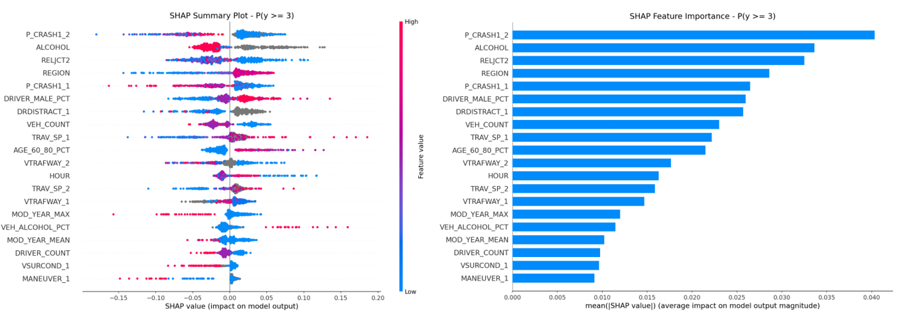
Materials
The full report as submitted for CS512 (Machine Learning), Sabancı University, January 2026 — Sima Adleyba, Başak Çarhacıoğlu, Ahmet İhsan Gül.
Model Selection and Explainability in Traffic Accident Severity Prediction
Figures and numbers on this page are taken from the final report; blocks marked “Preliminary analysis” come from the project's earlier progress stage, which ran on a representative 20k subset before scaling to the full dataset. There is no public code repository for this project.